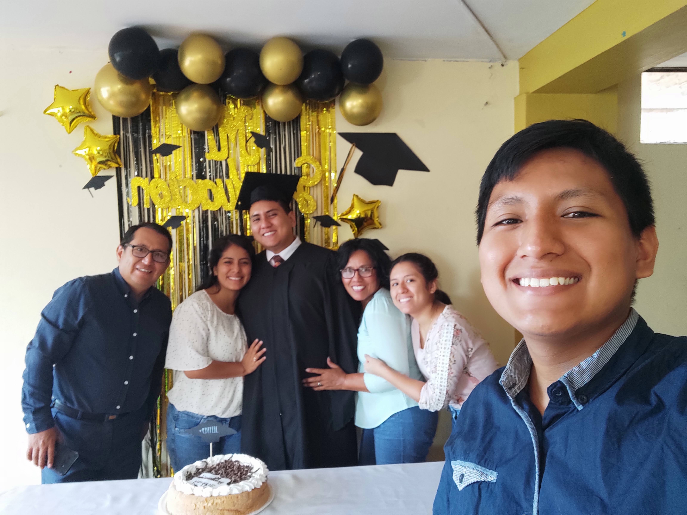

Goals and dreams sometimes seem impossible to achieve. I come from Peru, which is a developing country. My family did not have too much money, but my parents tried to educate us in the best way they could to contribute to society. It was hard to think about my dreams when we did not have anything, but my vision started to be realized when I worked hard to accomplish it.
dad did not have a higher education, but he was the first to get it at 40 years old. It was a fantastic experience; the celebration was like a dream. I never expected to see my dad's graduation, but that day, something changed in me because I realized how important having an education was. After a few days, my dad explained the importance of getting a higher education because he was building a company. There was a point when the company could not grow due to his lack of knowledge, so he decided to study, and that was where he learned about vision; a company without vision is nothing. This learning helped me think about my goals, and I wanted to have a higher education.
some years, I decided to serve as a missionary of the Church of Jesus Christ of Latter-day Saints. It was the first time in my entire life that I felt that I was doing something on my own. I was assigned to serve in Argentina Comodoro Rivadavia. That mission was far from my home, and it seemed that it was the end of the world. The weather was crazy because of the wind and the cold. When I arrived from Peru at the airport of Comodoro, I could not believe it because since I was a child, I had viewed the missionaries as angels, and I never thought I would become one of them. The Airport of Comodoro is not the prettiest in the world, and Comodoro is not the most beautiful mission to serve in, but I knew that there was a purpose for me to be there, and I was excited to discover it. Serving a mission opens your eyes and helps you become a better person because you talk with people and help them with their problems. A mission teaches you to become more Christlike. When we did service for families, I could never forget their faces of gratitude and the good feeling that made me happy.
After my mission, I wanted to be an example for my family and my siblings, but it was hard to decide what to study and where to work; my dad was pressuring me to study in Peru, but my goal was to learn here in the United States. I did not know how to do it, but I did my best. I studied every day, practiced with friends, and took English classes; sometimes, I wanted to give up because English sometimes did not make sense. After some time, everything started to work out.
After my studies in English, the hard part was applying to the college because I had to get a visa and take a test of English. The English test was four hours, and I remember that after the test, I had to wait for a week to receive my scores, but it was like an eternity. I remember the morning when I saw my scores. I did not pass the test for four points; I could not believe it, only four points. I did not want to retake the test because I was unfortunate. I felt that my dream would not be accomplished, but that day I remember that my dad encouraged me to try it again. And, I did it for the last time. I passed the test, and I was pleased, but I knew that that was not all because I had to have an interview with the embassy of the United States. The discussion was very complicated because the man was very serious, and it seemed that he did not want to give me the visa, but he did. And now I know that the words of Elder Jeffrey R. Holland (1999), "Don't give up, boy. Don't you quit. You keep walking. You keep trying... It will be all right in the end. Trust God and believe in good things to come." These words apply to every situation in our lives.
Now I know that if we put real effort into achieving our goals, we will always see results, and this is the pattern that I have seen in my life. At this time, I am here in the United States studying what I have always wanted, and I am trying to be self-reliant. I also know that my siblings will follow my example, and someday, they will come to join me.
 This picture was taken two years later I wrote this postSee my Graduation Ensign College page.